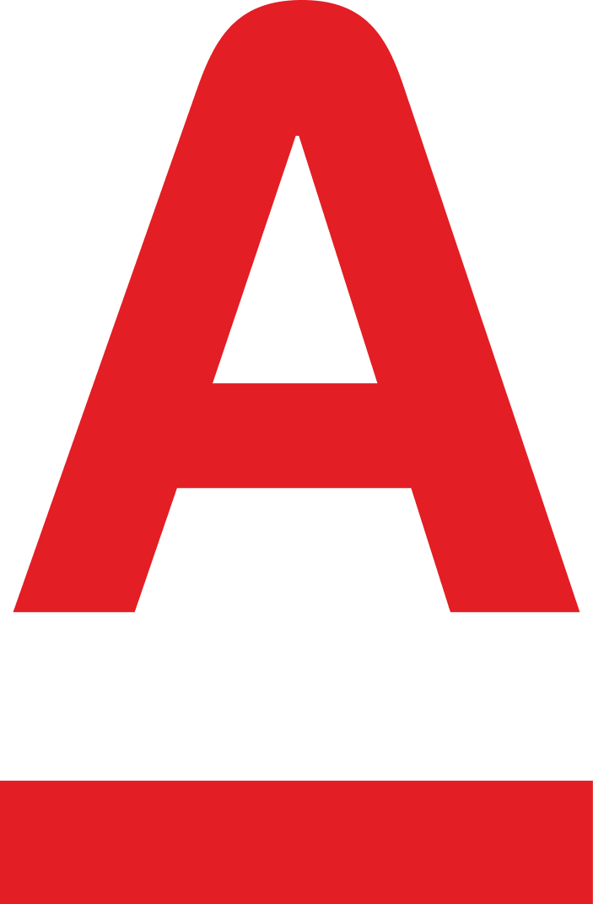

SFA CallОБЩИЙ СЛАЙД ЧЕРНОВИК
Общий слайд про подход к ИИ в SFA Call
AI Agent
Ассистент QA для тест-стендов
Автоматический анализ ошибок
Что в итоге получилось?

Анализ ошибки в цикле, принятие решений о вызове инструментов MCP
Next
АI проверка структуры документа для С.А.
Следующий кейс использования